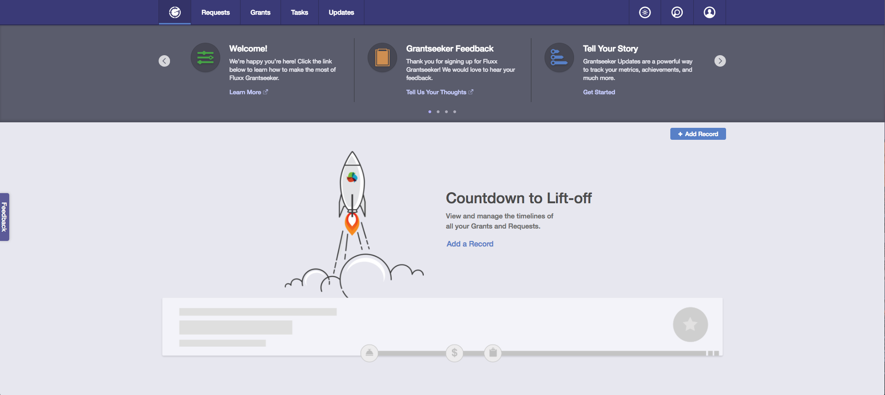
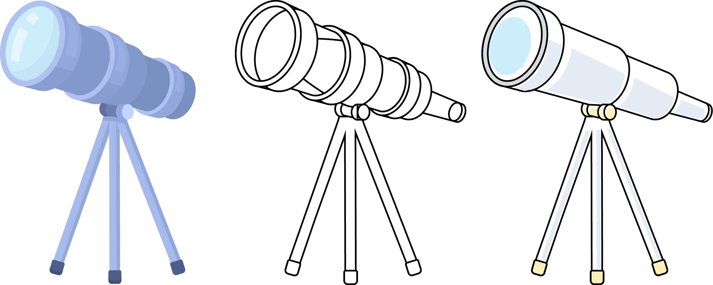
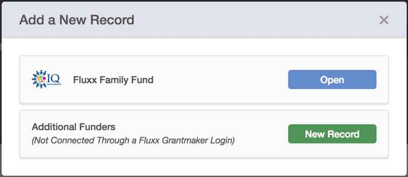
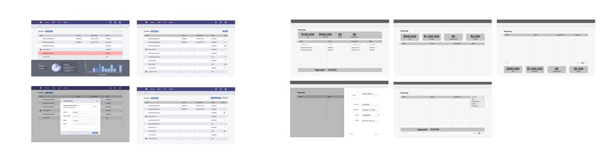

Internship
Fluxx Labs
User Research, Personas, Prototyping, Adobe Illustrator, Adobe InDesign, Adobe XD, Figma
TIMEFRAME
May 2017 - October 2017
ROLES
Product Designer, UI Designer, Copywriter
TEAM
Steve Heady, Stephen Kui, Van Truong
Fluxx Labs builds products for the philanthropic sector in order to better optimize the interactions between funders and grantees.
I was able to contribute to their two main products during my internship there: Grantmaker (GM) and Grantseeker (GS). Grantmaker is a product used by foundations to give out grants and monitor the progress of their grantees. Grantseeker is a product used by nonprofits to find, keep track of, and apply for grants.
Admin Panel User Research
I independently conducted user interviews with internal staff across different departments in order to understand how they used and supported the vast capabilities of Grantmaker's admin panel, and how to improve its design to help them in their day-to-day tasks. I organized my own findings and past research into generalized focus areas, suggested possible solutions through my personal explorations, and presented my findings in a visual and oral presentation to the Product (devs / engineers, design, PMs), QA, and Support teams.
saved post-it notes by using Google Sheets
Builder Basics
As part of their onboarding training, Fluxx has a monthly workshop known as "Builder Basics", where employees deeply familiarize themselves with the capabilities of the admin panel feature in the Grantmaker product. After taking the course myself, I took the initiative to personally go through and condense the 400-page manual we used for the class, while synthesizing essential things I had learned, into a helpful PDF to be distributed throughout the company as a so-called "Builder Basics Cliff Notes". I initially used Adobe XD (Experience Design), but eventually switched the project over to InDesign.
Grantmaker Personas
Van and I met with coworkers from different teams in Fluxx, who have had frequent interactions with our clients. We compiled their internal data and knowledge on foundations to define six different personas. Each persona represents a different department within a foundation, including typical job functions, responsibilities, and needs.
Van created the layout using Adobe XD, and I contributed to the copy and the more data-heavy visual elements.
Grantmaker Zero States
I independently designed the zero states for two Grantmaker dashboards. Initially, I did most of my prototyping on Figma, before moving to Adobe XD, and iterated based on feedback from the rest of the design team. Much of my initial work was very text-heavy, but I eventually introduced some more formalized design elements to help teach the user how to use different parts of the different dashboards in Grantmaker.
Legacy Dashboard:
final Legacy dashboard zero state
iterations of Legacy dashboard zero states
Avant Dashboard:
final Avant dashboard zero state
iterations of Avant dashboard zero states
Grantseeker Zero States
Van and I collectively brainstormed a number of themes for Grantseeker's zero states, playing with mixed metaphors, including ones of growth and labor in order to watching a seed mature into a fruit tree. We eventually settled on a more consistent and exciting theme of a journey through space to draw the analogy of the progression of a nonprofit's requests for grants.Van created the layout using Adobe XD, and I brainstormed and wrote up all the copy.

Home Screen
Requests page
Grants page
Tasks page
Updates page
Answer Bank page
404 page
I also used Illustrator to create the telescope in the "Prospecting" zero state:

Process of retracing and styling a telescope
And independently designed the futuristic tablet in the "Funder Management" zero state:

Plethora of different options
Final design
Independent Explorations
Adding Records in GS
I designed different options in Adobe XD for the "Add Record" modal to better distinguish between Fluxx and non-Fluxx funders while maintaining the features of Grantseeker components.
Currently, there isn't a huge discrepancy in UI between the card to add a pre-existing Fluxx funder and the card to add a non-Fluxx funder (who must be added manually by the grantseeker):

current modal for adding records
The challenge was then to find a layout that allowed easy navigability across tabs to add pre-existing Fluxx funders to the grantseeker's connections, while finding a way to clearly call out the ability to add non-Fluxx funders. Since a grantseeker would only connect to a maximum of 3-4 funders at a time, I was able to use the rest of the space on the modal to design the callout.

Different UIs for "Add Record" modal
In the designs I ended up choosing, I altered between a card that looked less like an already connected funder and more like an action item, and different layouts for a "footer" that would remain visible even when the tab changes, so that the user had the option to add a non-Fluxx funder on the modal at any time. The third design allowed the ability to more easily skim the page by aligning all the buttons in the first tab to the right.
Sidebar Design
When adding records, Grantseeker currently has functionality so that a user can easily add to their tasks and updates, while accessing stored responses in the Answer Bank to answer common form questions. However, as the number of items in that sidebar increased, the question was how to effectively utilize the limited space.
Stephen and I played with different ideas, including tabs that would allow for one component to be opened at a time. One possible problem we would have run into was if the screen size was reduced, how would we arrange the 6+ tabs.
I independently brainstormed solutions for the new sidebar functionality of Grantseeker in Adobe XD. The following is an interactive prototype of a more playful idea I came up with using a floating action button.
The single visible button can be clicked to open the other button options, which are then clicked to open and close modals as the user needed, giving the user greater control over what they want displayed at any given time. The buttons are relatively unobtrusive even when overlapping over open components in the sidebar because they take up relatively little real estate, and can also be closed. Tooltips that appear on hover allows the user to see which button opens what modal. If I had had more time, I would have also introduced icons on the buttons to more easily delineate between them.
While we ended up using tabs (displayed vertically!), this was an enjoyable exploration for me in finding a delightful and unique way to access the navigation.
Payments UI Layout
I mapped out the UX of the new payments and reports sections, and iterated through different UIs in Figma:

Imagining the UIs for the payments page, simplifying possible interactions, and emphasizing certain information
While a lot of Grantseeker components currently utilize a card layout, I thought a table would be the best way to represent the information because tables are easily scannable, and because payments were more likely to be viewed in relation to other records.
I tried to limit the time the user would need to click and open up individual records (currently displayed in a modal), knowing that this could end up proving to be a repetitive and time-consuming task. To do this, I added buttons and displays of quick action items that may need to be performed en masse, including changing the status of non-Fluxx payments (which would have to be entered and managed manually) and exporting records from the table.
I tried to call out important information in some of my wireframing by bringing in one of the components from the homepage, and later just using a clear display of important aggregated numbers.
Logo Design
I brainstormed logos for the client service level known as Concierge Circle.
I personally like the bottom right one most because it plays with the silhouette of a "C" and a circle to represent a person (a traditional concierge) while having some parity with the current GS and GM logos.
Figma Components
I built out a standard library of Figma Components for the design and PM team to quickly wireframe ideas.
QUESTIONS?
If you have any questions about my experience at Fluxx, feel free to reach out!